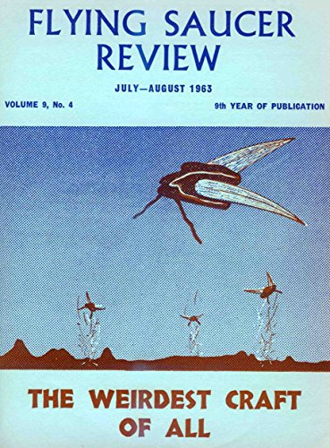

<!--#include virtual="/header-start.html" -->
<title>FSR</title>
<meta content="https://www.ignaciodarnaude.com/ufologia/FSR,1963,Jul-Aug,V%209,N%204.pdf" name="url"/>
<meta content="FSR vol. 9, n° 4" name="copyright">
<!--#include virtual="/header-end.html" -->
<figure class="right side">
  
  <figcaption>Cover</figcaption>
</figure>
<section>
  <h2>An open secret</h2>
  <p>The ufologist ...</p>
</section>
<section>
  <h2><a href="TheVauriatSighting">The Vauriat sighting</a></h2>
</section>
<!--#include virtual="/footer.html" -->
